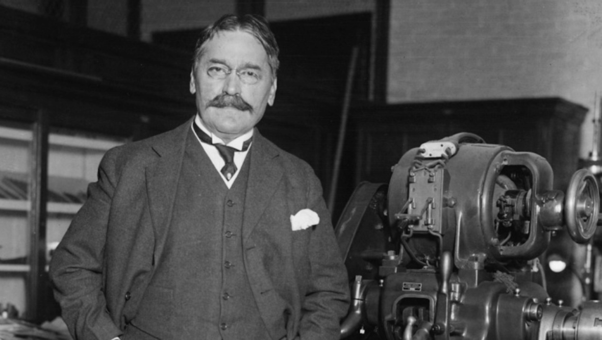

"Сакај го ближниот како што се сакаш себе си".
Михајло Идворски Пупин е роден во 1854 година во селото Идвор. Растејќи во сиромашно земјоделско семејство, неговата прва училница биле ѕвездените ноќи додека ги чувал говедата. Токму таму, слушајќи како звукот патува низ земјата, се родил неговиот научен ум.
Неговата мајка Олимпијада, иако не е едуцирана, била неговиот најголем мотиватор. Нејзините зборови „Знаењето е златна скала преку која се оди во небото“ го испратиле на 20-годишна возраст на пат кон Америка. Без јазик и со само 5 центи во џебот.

Првите пет години во САД работел како физички работник, пренесувал јаглен и работел на фарми. Но, секоја слободна вечер ја минувал во библиотека, учејќи физика и англиски јазик.
Неговиот брилијантен ум му носи целосна стипендија на Колумбија, каде што дипломира со највисоки почести во 1883 година. Подоцна го основа првиот Оддел за електротехника токму на овој универзитет.
Својата жед за знаење ја продолжува во Кембриџ и Берлин, каде што докторира под менторство на славниот Херман фон Хелмхолц, враќајќи се во САД како изграден врвен научник.

Најголемиот проблем на тогашната телефонија бил што звукот се губел на големи далечини. Пупин пресметал дека ако се постават индуктивни калеми на одредени растојанија, сигналот ќе биде чист.
Патентот го откупила компанијата AT&T. Благодарение на ова, луѓето од Њујорк за прв пат можеле телефонски да разговараат со луѓето во Сан Франциско.

Тој го скратил времето на снимање со Х-зраци од еден час на само неколку секунди, поставувајќи ги темелите на модерната рендгенска дијагностика.
Пупин бил толку почитуван што за време на Првата светска војна развивал сонари за војската, а во 1915 година станал еден од главните основачи на НАЦА – агенцијата која денес ја знаеме како НАСА.
Неговата автобиографија „Од пасиштата до наученикот“ му ја носи Пулицеровата награда во 1924 година. Тој останува запаметен како врвен филантроп, помагајќи студенти, сиромашни и чувајќи ја историјата на својот народ сè до неговата смрт на 12 март 1935 година во Њујорк.